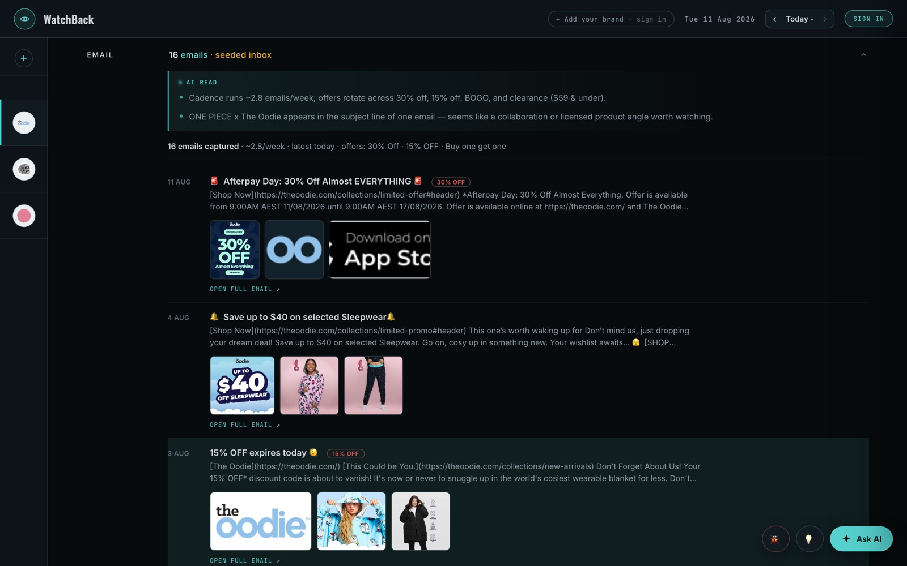
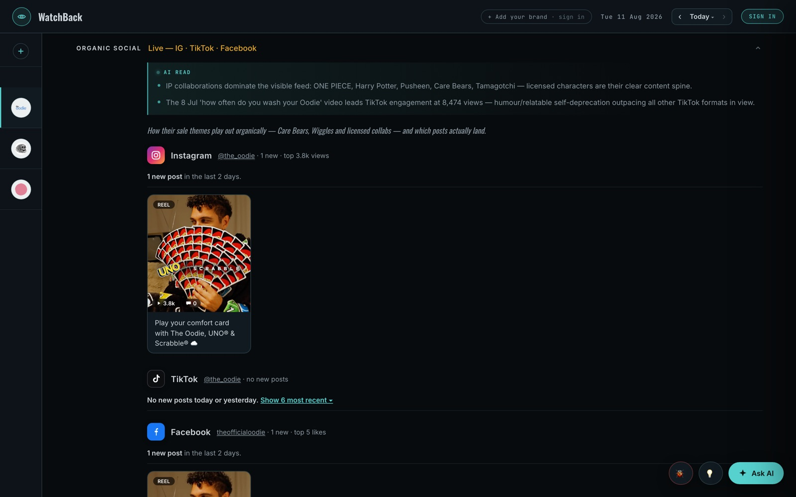
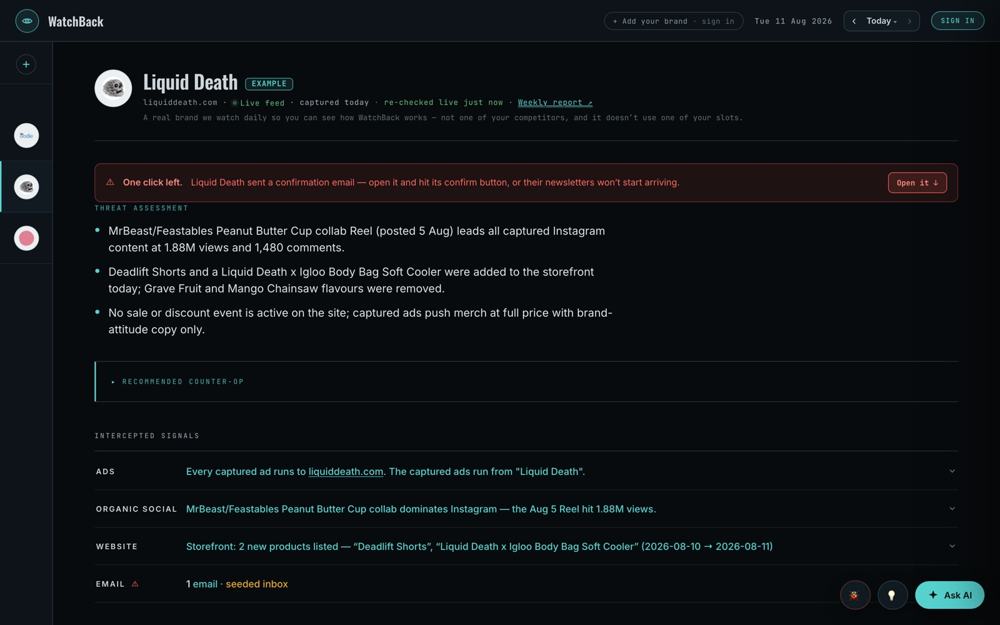

The platform — in motion
Not mockups: these are live captures of the production app watching real brands. Open any of them yourself — the demo dossiers are public.
The dossier — threat assessment first
Every competitor gets a subject file that opens with the three things that actually matter today, then a recommended counter-op, then the four intercepted channels underneath.
What it solves: the fourteen-tab morning ritual. Ninety seconds, fully briefed — and a channel that captured nothing says so, instead of padding itself with filler.

Every ad decoded — hooks named, angles read
Pulled daily from the public ad library: new launches flagged, variant tests counted, video scripts transcribed, and each creative's hook and angle named — flash-sale urgency, nostalgia brand collab, meme humour — not just thumbnails in a grid.
What it solves: knowing a rival "runs ads" versus knowing which angle they just started scaling.

Storefront — prices to the cent, with receipts
The full catalogue captured daily: price moves, sales starting and ending, new products, pulled colourways — with a draggable before/after screenshot of the storefront, dated to the day.
What it solves: "when did they actually start that sale?" You'll have the date, the exact prices, and the screenshot.

Their email programme, read for you
A seeded inbox catches every campaign they send: offers, cadence, discount codes, the creatives themselves — and the AI notices patterns, like a licensed-collab angle appearing in a subject line.
What it solves: subscribing to ten rival newsletters and reading none of them.

Organic social — what's actually landing
Instagram, TikTok and Facebook captured with real engagement numbers, so the AI can tell you which formats work — and what the content spine of their whole strategy is.
What it solves: scrolling three feeds hoping to notice a pattern. The pattern is handed to you.

The full sweep — every channel, one scroll
Ads, organic social, email and storefront read side by side — because a price cut plus an urgency email plus a new ad push is one coordinated move, not three coincidences. You only see that when the channels sit in one file.

Any market, any brand
Point it at a rival and the machine does the rest — capture, diff, decode, brief. A different vertical needs zero extra configuration, and creative gets decoded in any language.
What it solves: coverage that depends on someone remembering to check. It never forgets, never gets bored, never skips a day.
